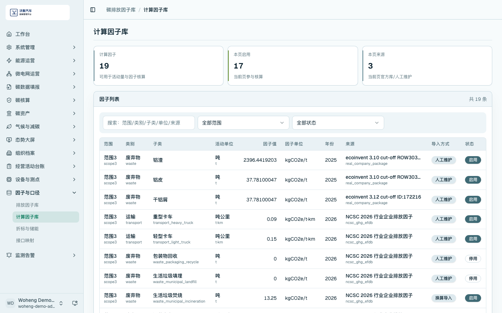
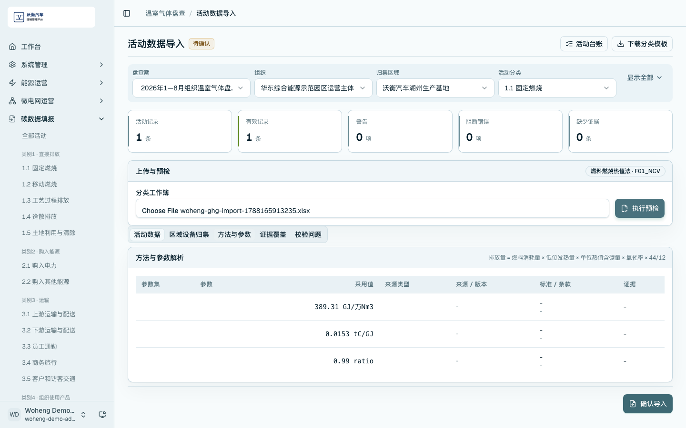

因子维护与核算准备
排放因子用于把活动数据转换为温室气体排放量。平台区分官方原始因子和计算因子，前者用于来源追溯，后者用于实际核算。
官方排放因子库
进入 /carbon-mgmt/factors，查看因子分类树、官方库、原始记录和校验状态。业务人员可按分类查看因子名称、适用范围、来源版本和原始字段。

打开因子详情后，可查看原始因子追溯信息，包括来源、版本、字段和校验状态。

计算因子库
进入 /carbon-mgmt/calculation-factors，查看参与核算的因子列表。计算因子应包含范围、因子值、单位、导入方式和启用状态。

方法与参数解析
在活动数据导入预检后切换到「方法与参数」页签，查看参数集、采用值、来源版本、标准条款和适用范围。该页面用于说明活动数据如何选择核算方法，以及因子和参数如何参与计算。

检查项
- 因子应有来源、版本和适用范围。
- 计算因子应明确启用状态。
- 活动数据预检应能解析方法和参数。
- 演示时避免把示例因子表述为外部认证结论。